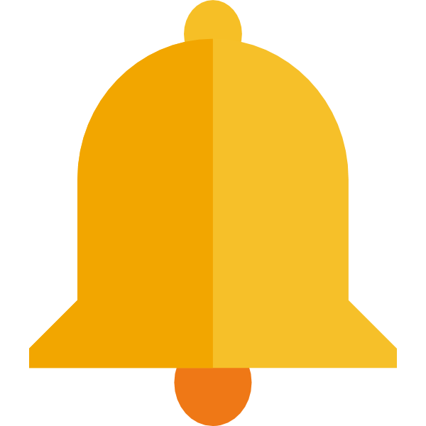

Veille technologique
L’essor de Fortinet et la migration des entreprises vers ses solutions réseau
Méthodologie


Présentation de Fortinet
Fortinet est une entreprise spécialisée en cybersécurité, reconnue pour ses solutions de protection réseau, notamment ses pare-feux FortiGate. Elle propose une approche intégrée combinant performance et sécurité pour les entreprises.
Pourquoi ce sujet ?
La cybersécurité et la gestion réseau sont devenues des enjeux majeurs. De plus en plus d’entreprises migrent de Cisco vers Fortinet, et il est important de comprendre les raisons de ce choix, ainsi que les impacts techniques et économiques. De plus, ce sujet est en lien direct avec mes stages.